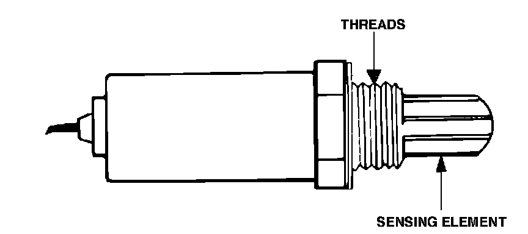

Oxygen Sensor: Service and Repair
Oxygen Sensor:

REMOVAL
1. Disconnect harness terminal.
2. Remove sensor with suitable socket or wrench.
INSTALLATION
1. Apply a thin coating of anti-seize compound to the threads.
NOTE: Do not contaminate sensing tip with compound.
2. Install sensor and torque it to 33 ft.lb (45 Nm).
3. Apply a thin coating of dielectric compound to the connector.
4. Connect harness terminal.